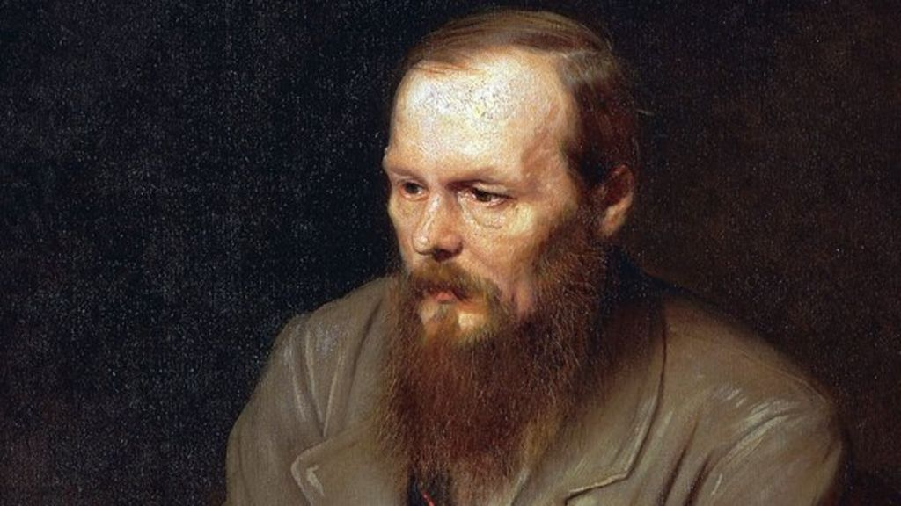

Fast Facts
- Full Name: Fyodor Mikhailovich Dostoevsky
- Known For: Russian essayist and novelist
- Born: November 11, 1821 in Moscow, Russia
- Parents: Dr. Mikhail Andreevich and Maria (née Nechayeva) Dostoevsky
- Died: February 9, 1881 in St. Petersburg, Russia
- Education: Nikolayev Military Engineering Institute
- Selected Works: Notes from Underground (1864), Crime and Punishment (1866), The Idiot (1868–1869), Demons (1871–1872), The Brothers Karamazov (1879–1880)
- Spouses: Maria Dmitriyevna Isaeva (m. 1857–1864), Anna Grigoryevna Snitkina (m. 1867–1881)
- Children: Sonya Fyodorovna Dostoevsky (1868–1868), Lyubov Fyodorovna Dostoevsky (1869–1926), Fyodor Fyodorovich Dostoevsky (1871–1922), Alexey Fyodorovich Dostoevsky (1875–1878)
Fyodor Mikhailovich Dostoevsky was born in 1821, the second of seven children, and lived until 1881. His father, an army doctor attached to the staff of a public hospital, was a stern and self-righteous man while his mother was the opposite — passive, kind, and generous — and perhaps this fact accounts for Dostoevsky's filling his novels with characters who seem to possess opposite extremes of temperament. Dostoevsky's early education was in an army engineering school, where he was apparently bored with the dull routine and the unimaginative student life. He spent most of his time, therefore, dabbling in literary matters and in reading the latest authors; his penchant for literature was obsessive. And almost as obsessive was Dostoevsky's preoccupation with death, for while the young student was away at school, his father was killed by the serfs on his estate. This sudden and savage murder smoldered within the young Dostoevsky, and when he began to write, the subject of crime, and murder in particular, was present in every new publication. It is, of course, the central concern of Crime and Punishment. Dostoevsky was never free of the horrors of homicide and even at the end of his life, he chose to write of another violent death — the death of a father — as the basis for The Brothers Karamazov.
After spending two years in the army, Dostoevsky launched his literary career with Poor Folk, a novel that was an immediate and popular success and one highly acclaimed by the critics. Never before had a Russian author so thoroughly examined the psychological complexities of man's inner feelings and the intricate workings of the mind. Following Poor Folk, Dostoevsky's only important novel for many years was The Double, a short work dealing with a split personality and containing the genesis of Crime and Punishment. Perhaps the most crucial years of Dostoevsky's melodramatic life occurred soon after the publication of Poor Folk. These years included some of the most active, changing phases in all of Russian history, and Dostoevsky had an unusually active role in this era of change. Using influences acquired with his literary achievements, he became involved in political intrigues of a questionable nature. He was, for example, deeply influenced by new and radical ideas that were entering Russia from the West, and he soon became affiliated with those who hoped to revolutionize Russia with all sorts of Western reforms. Dostoevsky published many articles concerning various political questions knowing full well that they were illegal and that all printing was controlled and censored by the government.
The entire group was accordingly assembled, all preparations were completed, and the victims were tied and blindfolded. Then, seconds before the shots were to be fired, a messenger from the Tsar arrived. A reprieve had been granted. Actually the Tsar had never intended that the men were to be shot; he merely used this cruel method to teach Dostoevsky and his friends a lesson. This harrowing encounter with death, however, haunted him for the rest of his life. After the commutation of the death sentence, Dostoevsky was sent to Siberia and during the four years in prison there, he changed his entire outlook on life. During this time, in horrible living conditions, he began to re-examine his values. A total change occurred within the man. He experienced his first epileptic seizure and began to reject a heretofore blind acceptance of the new ideas that Russia was absorbing. He underwent a spiritual regeneration so profound that he emerged with a prophetic belief in the sacred mission of the Russian people. He believed that the salvation of the world was in the hands of the Russian people and that eventually Russia would rise to dominate the world. It was also in prison that Dostoevsky formulated his well-known theories about the necessity of suffering. Suffering became man's chief means of salvation.